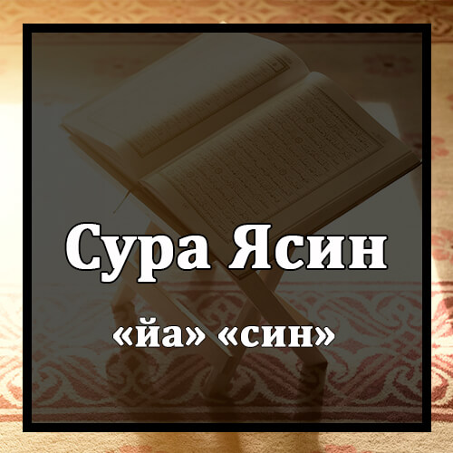

Бисмилляхир-Рахманир-Рахиим
Во имя Аллаха Милостивого и Милосердного!
Йа-Син
Йа. Син.
Уал-Кур-анил-Хаким
Клянусь мудрым Кораном!
Иннака ламинал-мурсалин
Воистину, ты – один из посланников
’ала Сыратым-Муста-ким
на прямом пути.
Танзилал-’азизир-Рахим
Он ниспослан Могущественным, Милосердным,
Ли-тунзира каумам-ма унзира аба-ухум фахум гафилун
чтобы ты предостерег людей, отцов которых никто не предостерег, из-за чего они оставались беспечными невеждами.
Лакад хаккал-Каулу-’ала аксарихим фахум ла йу-минун
Относительно большинства из них сбылось Слово, и они не уверуют.
Инна жа-’ална фи а’-накихим аглалан фахийа илал-азкани фахум-мукмахун
Воистину, Мы наложили на их шеи оковы до самого подбородка, и их головы задраны.
Уа жа-’ална мим байни айдихим саддау-уа мин халфихим саддан-фа-агшай-нахум фахум ла йубсырун
Мы установили преграду перед ними и преграду позади них и накрыли их покрывалом, и они не видят.
Уа сауа-ун ’алайхим а-анзартахум ам лам тунзир-хум ла йу-минун
Им все равно, предостерег ты их или не предостерег. Они не веруют.
Иннама тунзиру маниттаба-’аз-Зикра уа хашийар-Рахмана бил-гайб; фабаш-ширху би-Магфиратиу-уа Ажрин-Карим
Ты можешь предостеречь только того, кто последовал за Напоминанием и устрашился Милостивого, не видя Его воочию. Обрадуй его вестью о прощении и щедрой награде.
Инна Нахну нухйил-маута уа нактубу ма каддаму уа асарахум; уа кулла шай-ин ах-сайнаху фи Имамим-мубин
Воистину, Мы оживляем мертвых и записываем то, что они совершили, и то, что они оставили после себя. Всякую вещь Мы подсчитали в ясном руководстве (Хранимой скрижали).
Уадриб лахум-масалан Ас-хабал-Карйах. Из жаахал-мурсалун
В качестве притчи приведи им жителей селения, к которым явились посланники.
Из арсална илайхимус-найни факаззабухума фа-’аззазна би-салисин-факалу инна илайкум-мурсалун
Когда Мы отправили к ним двух посланников, они сочли их лжецами, и тогда Мы подкрепили их третьим. Они сказали: «Воистину, мы посланы к вам».
Калу ма антум илла башарум-мислуна уа ма анзалар-Рахману мин-шайин ин антум илла такзибун
Они сказали: «Вы – такие же люди, как и мы. Милостивый ничего не ниспосылал, а вы всего лишь лжете».
Калу Раббуна йа’-ламу инна илайкум ла-мурсалун
Они сказали: «Наш Господь знает, что мы действительно посланы к вам.
Уа ма ’алайна иллал-Балагул-мубин
На нас возложена только ясная передача откровения».
Калу инна татаййарна бикум; ла-иллам тантаху ланар-жуманнакум уа лайамассан-накум-минна ’азабун алим
Они сказали: «Воистину, мы увидели в вас дурное предзнаменование. Если вы не прекратите, то мы непременно побьем вас камнями и вас коснутся мучительные страдания от нас».
Калу та-ирукум-ма-’акум; а-ин зуккиртум? Бал антум ка-умум-мусрифун
Они сказали: «Ваше дурное предзнаменование обратится против вас самих. Неужели, если вас предостерегают, вы считаете это дурным предзнаменованием? О нет! Вы – люди, преступившие границы дозволенного!»
Уа жа-а мин аксал-Мадинати ражулуй-йас-’а кала йа-каумиттаби-’ул-мурсалин
С окраины города второпях пришел мужчина и сказал: «О мой народ! Последуйте за посланниками.
Иттаби’у мала йас-алукум ажрау-уа хум-мухтадун
Последуйте за теми, кто не просит у вас награды и следует прямым путем.
Уа ма лийа ла а’-будуллази фатарани уа илайхи туржа-’ун
И почему бы мне не поклоняться Тому, Кто сотворил меня и к Кому вы будете возвращены?
А-аттахизу мин-дунихи алихатан ий-йуриднир-Рахману бидуррил-ла тугни ’анни шафа-’атухум шай-ау-уа ла йункизун
Неужели я стану поклоняться другим богам помимо Него? Ведь если Милостивый пожелает причинить мне зло, то их заступничество ничем не поможет мне, и они не спасут меня.
Инни изал-лафи Далалим-мубин
Вот тогда я окажусь в очевидном заблуждении.
Инни аманту би-Раббикум фасма-’ун
Воистину, я уверовал в вашего Господа. Послушайте же меня».
Килад-хулил-Жаннах. Кала йа-лайта кауми йа’-ла-мун
Ему было сказано: «Войди в Рай!» Он сказал: «О, если бы мой народ знал,
Бима гафара ли Рабби уа жа-’алани минал-мукрамин
за что мой Господь простил меня (или что мой Господь простил меня) и что Он сделал меня одним из почитаемых!»
Уа ма анзална ’ала каумихи мим-ба’-дихи мин жундим-минассама-и уа ма кунна мунзилин
После него Мы не ниспослали на его народ никакого войска с неба и не собирались ниспослать.
Ин канат илла сайхатау-уахидатан-фа-иза хум хамидун
Был всего лишь один глас, и они затухли.
Йа-хасратан ’алал-’ибад! Ма йа-тихим-мир-расулин илла кану бихи йастахзи-ун
О горе рабам! Не приходил к ним ни один посланник, над которым бы они не издевались
Алам йарау кам ахлакна каблахум-минал-куруни аннахум илайхим ла йаржи-’ун
Неужели они не видят, сколько поколений Мы погубили до них и что они не вернутся к ним?
Уа ин-кул-лул-ламма жами-’ул-ладайна мухдарун
Воистину, все они будут собраны у Нас.
Уа Айатул-лахумул-ардул-майтах; ахйайнаха уа ахражна минха хаббан фаминху йа-кулун
Знамением для них является мертвая земля, которую Мы оживили и извлекли из нее зерно, которым они питаются.
Уа жа-’ална фиха жаннатим-мин-нахилиу-уа а’на-биу-уа фажжарна фиха минал-’уйун
Мы создали на ней сады из пальм и винограда и заставили биться в них источники,
Лийа-кулу мин самарихи, уа ма ’амилат-ху айдихим; афала йаш-курун
чтобы они вкушали их плоды и то, что создали своими руками (или чтобы они вкушали плоды, которые они не создали своими руками). Неужели они не будут благодарны?
Субханаллази халакал-азуажа куллаха мимма тумбитул-арду уа мин анфусихим уа мимма ла йа’-ламун
Пречист Тот, Кто сотворил парами то, что растит земля, их самих и то, чего они не знают.
Уа Айатул-лахумул-Лайлу наслаху минхун-Нахара фа-иза хум-музлимун
Знамением для них является ночь, которую Мы отделяем ото дня, и вот они погружаются во мрак.
Уаш-Шамсу тажри ла-муста-каррил-лаха; залика такдирул-’азизил-’ал-им
Солнце плывет к своему местопребыванию. Таково предустановление Могущественного, Знающего.
Уал-Камара каддарнаху маназила хатта ’ада кал-’уржунил-кадим
Мы предопределили для луны положения, пока она вновь не становится подобна старой пальмовой ветви.
Лаш-Шамсу йамбаги лаха ан тудрикал-Камара уа лал-Лайлу сабикун-Нахар; уа куллун-фи фалакий-йасбахун
Солнцу не надлежит догонять луну, и ночь не опережает день. Каждый плывет по орбите.
Уа Айатул-лахум анна хамална зурриййатахум фил-фулкил-маш-хун
Знамением для них является то, что Мы перенесли их потомство в переполненном ковчеге.
Уа халакна лахум-мим-мислихи ма йаркабун
Мы создали для них по его подобию то, на что они садятся.
Уа ин-наша нугрикхум фала сариха лахум уа ла хум йунказун
Если Мы пожелаем, то потопим их, и тогда никто не спасет их, и сами они не спасутся,
Илла Рахматам-минна уа мата-’ан ила хин
если только Мы не окажем им милость и не позволим им пользоваться благами до определенного времени.
Уа иза Кила лахумуттаку ма байна айдикум уа ма халфакум ла-’аллакум турхамун
Когда им говорят: «Бойтесь того, что перед вами, и того, что после вас, чтобы вы были помилованы», – они не отвечают.
Уа ма та-тихим-мин Айатим-мин Айати Раббихим илла кану ’анха му’-ридын
Какое бы знамение из знамений их Господа не явилось к ним, они непременно отворачиваются от него.
Уа иза кила лахум анфику мим-ма разакнакуму-ЛЛаху калаллазина кафару лиллазина аману анут-’иму маллау йаша-у-ЛЛаху ат-’амах? Ин антум илла фи далалим-мубин
Когда им говорят: «Расходуйте из того, чем вас наделил Аллах», – неверующие говорят верующим: «Неужели мы будем кормить того, кого накормил бы Аллах, если бы пожелал? Воистину, вы лишь находитесь в очевидном заблуждении».
Уа йакулуна мата хазал-уа’-ду ин-кунтум-садикин
Они говорят: «Когда сбудется это обещание, если вы говорите правду?»
Ма йан-зуруна илла Сайха-тау-уахидатан та-хузухум уа хум йахисс-имун
Им нечего ожидать, кроме одного только гласа, который поразит их тогда, когда они будут препираться.
Фала йастаты-’уна таусы-йатау-уа ла ила ахлихим йаржи-’ун
Они не смогут ни оставить завещание, ни вернуться к своим семьям.
Уа нуфиха фис-Сури фа-иза хум-минал-аждаси ила Раббихим йансилун
Протрубят в Рог, и вот они устремляются к своему Господу из могил.
Калу йа-уайлана мам-ба-’асана мим-маркади-на-Хаза ма уа-’адар-Рахману уа садакал-мурсалун
Они скажут: «О горе нам! Кто поднял нас с места, где мы спали?» Это – то, что обещал Милостивый, и посланники говорили правду».
Ин-канат илла Сайха-тау-уахидатан фа-иза хум жами-’ул-ладайна мухдарун
Будет один только глас, и все они будут собраны у Нас.
Фал-Йаума ла тузламу нафсун шай ау-уа ла туж-зауна илла ма кунтум та’-малун
Сегодня ни одной душе не будет причинено никакой несправедливости, и вам воздастся только за то, что вы совершали.
Инна Ас-хабал-Жаннатил-Йаума фи шугулин-факихун
Воистину, обитатели Рая сегодня будут заняты наслаждением.
Хум уа азуажухум фи зылалин ’алал-ара-ики муттаки-ун
Они и их супруги будут лежать в тенях на ложах, прислонившись.
Лахум фиха факихатуу-уа лахум-ма йадда-’ун
Там для них есть фрукты и все, что они потребуют.
Саламун-Каулам-мир-Раббир-Рахим
Милосердный Господь приветствует их словом: «Мир!»
Уамтазул-Йаума аййухал-мужримун
Отделитесь сегодня, о грешники!
Алам а’хад илайкум йа-Бани-Адама алла та’-будуш-Шайтан; иннаху лакум ’адуууум-мубин
Разве Я не завещал вам, о сыны Адама, не поклоняться сатане, который является вашим явным врагом,
Уа ани’-будуни. Хаза Сыратум-Мустаким
и поклоняться Мне? Это – прямой путь.
Уа лакад адалла минкум жибиллан-касира. Афалам такуну та’килун
Он уже ввел в заблуждение многих из вас. Неужели вы не разумеете?
Хазихи Жаханнамул-лати кунтум ту-’адун
Вот Геенна, которая была вам обещана.
Ислау-хал-Йаума бима кунтум такфурун
Горите в ней сегодня за то, что вы не веровали».
Ал-Йаума нахтиму ’ала афуахихим уа тукаллимуна айдихим уа ташхаду ар-жулу-хум-бима кану йаксибун
Сегодня Мы запечатаем их уста. Их руки будут говорить с Нами, а их ноги будут свидетельствовать о том, что они приобретали.
Уа лау наша-у латамасна ’ала а’йунихим фастабакус-Сырата фа-анна йубсырун
Если Мы пожелаем, то лишим их зрения, и тогда они бросятся к Пути. Но как они будут видеть?
Уа лау наша-у лама-сахнахум ’ала маканати-хим фамаста-та-’у мудыййау-уа ла йаржи-’ун
Если Мы пожелаем, то обезобразим их на их местах, и тогда они не смогут ни двинуться вперед, ни вернуться.
Уа ман-ну-’аммирху нунаккис-ху фил-халк; афала йа’-килун
Тому, кому Мы даруем долгую жизнь, Мы придаем противоположный облик. Неужели они не разумеют?
Уа ма ’алламнахуш-Ши’ра уа ма йамбаги лах; ин хууа илла Зикруу-уа Кур-анум-Мубин
Мы не учили его (Мухаммада) поэзии, и не подобает ему это. Это – не что иное, как Напоминание и ясный Коран,
Лийунзира ман кана хаййау-уа йахиккал-каулу ’алал-кафирин
чтобы он предостерегал тех, кто жив, и чтобы сбылось Слово относительно неверующих.
Ауалам йарау анна халакна лахум-мимма ’амилат айдина ан-’аман фахум лаха маликун
Неужели они не видят, что из того, что совершили Наши руки (Мы Сами), Мы создали для них скот, и что они им владеют?
Уа заллалнаха лахум фаминха ракубухум уа минха йа-кулун
Мы сделали его подвластным им. На одних из них они ездят верхом, а другими питаются.
Уа лахум фиха манафи’у уа машариб. Афала йашкурун
Они приносят им пользу и питье. Неужели они не будут благодарны?
Уаттахазу мин-дуни-ЛЛахи алихатал-ла-’аллахум йунсарун
Но они поклоняются вместо Аллаха другим богам в надежде на то, что им окажут помощь.
Ла йастаты-’уна насра-хум уа хум лахум жундум-мухдарун
Они не могут помочь им, хотя они являются для них готовым войском (язычники готовы сражаться за своих идолов, или идолы будут в Последней жизни готовым войском против язычников).
Фала йахзунка каулухум. Инна на’-ламу ма йусирруна уа ма йу’-линун
Пусть их речи не печалят тебя. Мы знаем то, что они скрывают, и то, что они обнаруживают.
Ауалам йарал-инсану анна халакнаху мин-нутфатин фа-иза хууа хасымум-мубин
Неужели человек не видит, что Мы сотворили его из капли? И вот он открыто препирается!
Уа дараба лана масалау-уа насийа халках; кала май-йухйил-’изама уа хийа рамим
Он привел Нам притчу и забыл о своем сотворении. Он сказал: «Кто оживит кости, которые истлели?»
Кул йухйихаллази анша-аха аууала маррах! Уа Хууа би-кулли халкин ’алим
Скажи: «Оживит их Тот, Кто создал их в первый раз. Он ведает о всяком творении».
Аллази жа-’ала лакум-ми-наш-шажарил-ахдари наран фа-иза антум-минху тукидун
Он создал для вас огонь из зеленого дерева, и теперь вы разжигаете огонь от него.
Ауа лайсаллази халакас-самауати уал-арда би-Кадирин ’ала ай-йахлука мислахум? Бала! Уа Хууал-Халлакул-’алим
Неужели Тот, Кто сотворил небеса и землю, не способен создать подобных им? Конечно, ведь Он – Творец, Знающий.
Иннама Амруху иза арада шай-ан ай-йакула лаху КУН файакун
Когда Он желает чего-либо, то стоит Ему сказать: «Будь!» – как это сбывается.
Фа-Субаханаллази би-йадихи Малакуту кулли шай-иу-уа илайхи туржа-’ун
Пречист Тот, в Чьей Руке власть над всякой вещью! К Нему вы будете возвращены.